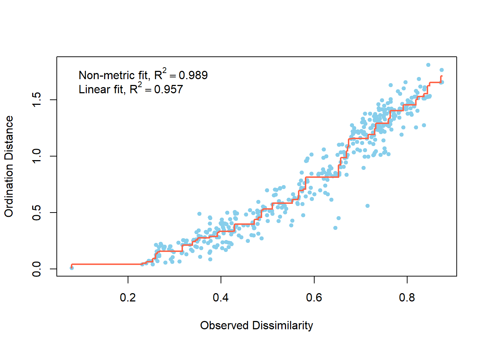

Chapter 2 Silva-based classification with filtering
2.1 Import data:
I must convert the provided FASTA file into .qza format, which is readable by Qiime2.
qiime tools import
--input-path LABEseqs.fna
--output-path LABEseqs.qza
--type 'SampleData[Sequences]'2.2 Dereplicate sequences:
qiime vsearch dereplicate-sequences
--i-sequences LABEseqs.qza
--o-dereplicated-table LABEtable.qza
--o-dereplicated-sequences rep-LABEseqs.qza2.3 De novo clustering:
qiime vsearch cluster-features-de-novo
--i-table LABEtable.qza
--i-sequences rep-LABEseqs.qza
--p-perc-identity 0.97
--o-clustered-table LABEtable-dn-97.qza
--o-clustered-sequences rep-LABEseqs-dn-97.qzaSince I am using 454 data, I used a cutoff of 97% to avoid PCR-induced error in my clustering algorithm.
2.4 Chimera checking and removal:
Check for chimeras:
qiime vsearch uchime-denovo
--i-table LABEtable-dn-97.qza
--i-sequences rep-LABEseqs-dn-97.qza
--output-dir uchime-dn-outVisualize the resultant chimera check output:
qiime metadata tabulate
--m-input-file uchime-dn-out/stats.qza
--o-visualization uchime-dn-out/stats.qzvNumber of samples: 30
Number of features: 103,356 (sequences)
Total frequency: 127,603 (reads)
Filter out chimeras and borderline chimeras:
qiime feature-table filter-features
--i-table LABEtable-dn-97.qza
--m-metadata-file uchime-dn-out/nonchimeras.qza
--o-filtered-table uchime-dn-out/LABEtable-nonchimeric-wo-borderline.qza
qiime feature-table filter-seqs
--i-data rep-LABEseqs-dn-97.qza
--m-metadata-file uchime-dn-out/nonchimeras.qza
--o-filtered-data uchime-dn-out/LABErep-seqs-nonchimeric-wo-borderline.qzaVisualize the resultant chimera-free output:
qiime feature-table summarize
--i-table uchime-dn-out/LABEtable-nonchimeric-wo-borderline.qza
--o-visualization uchime-dn-out/table-nonchimeric-wo-borderline.qzvNumber of samples: 30
Number of features: 13,389 (OTUs)
Total frequency: 114,300 (reads)
NOTE - Lavoie et al. 2017 report 140,848 OTUs.
2.5 Abundance filtering
2.6 Taxonomy assignment using Silva
Since I am analyzing environmental data, I used the Silva database (132.99). I used the sklearn classification algorithm.
qiime feature-classifier classify-sklearn
--i-classifier /projects/e30740/qiime2_classifiers/silva-132-99-nb-classifier.qza
--i-reads /projects/e30740/mselensky/FinalProject/uchime-dn-out/LABErep-seqs-nonchimeric-wo-borderline.qza
--o-classification /projects/e30740/mselensky/taxonomy/taxonomy.qzaI was not able to visualize the resultant taxonomy.qza file as a table using metadata tabulate. I had to employ the following workaround, which allowed me to visualize my taxonomy information in tabular form:
qiime tools export
--input-path /projects/e30740/mselensky/FinalProject/taxonomy/taxonomy.qza
--output-path /projects/e30740/mselensky/FinalProject/taxonomy/taxonomy-with-spaces
qiime metadata tabulate
--m-input-file /projects/e30740/mselensky/FinalProject/taxonomy/taxonomy-with-spaces/taxonomy.tsv
--o-visualization /projects/e30740/mselensky/FinalProject/taxonomy/taxonomy-as-metadata.qzv
qiime tools export
--input-path /projects/e30740/mselensky/FinalProject/taxonomy/taxonomy-as-metadata.qzv
--output-path /projects/e30740/mselensky/FinalProject/taxonomy/taxonomy-as-metadata
qiime tools import
--type 'FeatureData[Taxonomy]'
--input-path /projects/e30740/mselensky/FinalProject/taxonomy/taxonomy-as-metadata/metadata.tsv
--output-path /projects/e30740/mselensky/FinalProject/taxonomy/taxonomy-without-spaces.qza
qiime metadata tabulate
--m-input-file /projects/e30740/mselensky/FinalProject/taxonomy/taxonomy-without-spaces.qza
--o-visualization /projects/e30740/mselensky/FinalProject/taxonomy/taxonomy-without-spaces.qzv2.7 Taxa barplot
This yielded a taxa barplot as an output (before rarefaction):
qiime taxa barplot
--i-table /projects/e30740/mselensky/FinalProject/uchime-dn-out/LABEtable-nonchimeric-wo-borderline.qza
--i-taxonomy /projects/e30740/mselensky/FinalProject/taxonomy/taxonomy.qza
--m-metadata-file /projects/e30740/mselensky/FinalProject/LABEmetadata.txt
--o-visualization /projects/e30740/mselensky/FinalProject/taxonomy/LABE_taxa_barplot.qzv2.8 Phylogenetic tree
qiime phylogeny align-to-tree-mafft-fasttree
--i-sequences /projects/e30740/mselensky/FinalProject/uchime-dn-out/LABErep-seqs-nonchimeric-wo-borderline.qza
--o-alignment /projects/e30740/mselensky/FinalProject/Phylogeny/LABErep-seqs-nonchimeric-wo-borderline_aligned
--o-masked-alignment /projects/e30740/mselensky/FinalProject/Phylogeny/LABErep-seqs-nonchimeric-wo-borderline_masked_aligned
--o-tree /projects/e30740/mselensky/FinalProject/Phylogeny/LABEtree
--o-rooted-tree /projects/e30740/mselensky/FinalProject/Phylogeny/LABEtree_rooted
--output-dir /projects/e30740/mselensky/FinalProject/Phylogeny2.9 Core diversity metrics
First, I made an alpha rarefaction plot to determine sampling depth:
qiime diversity alpha-rarefaction
--i-table /projects/e30740/mselensky/FinalProject/uchime-dn-out/LABEtable-nonchimeric-wo-borderline.qza
--p-max-depth 5000
--p-min-depth 1
--p-steps 10
--p-iterations 10
--o-visualization /projects/e30740/mselensky/FinalProject/LABE_alpha_rarefied_tableWhen sampling depth = 2000,
* Retained 58,000 (50.74%) sequences in 29 (96.67%) samples at the specifed sampling depth.
Using the phylogenetic tree from step 8, I then measured diversity core metrics on my rarefied data with a sampling depth of 2000:
qiime diversity core-metrics-phylogenetic
--i-phylogeny /projects/e30740/mselensky/FinalProject/Phylogeny/LABEtree_rooted.qza
--i-table /projects/e30740/mselensky/FinalProject/uchime-dn-out/LABEtable-nonchimeric-wo-borderline.qza
--p-sampling-depth 2000
--m-metadata-file /projects/e30740/mselensky/FinalProject/LABEmetadata_all_samples.txt
--output-dir /projects/e30740/mselensky/FinalProject/CoreMetricsResultsOutputs give the following information:
ALPHA DIVERSITY CORE METRICS:
Shannon’s diversity index
* A quantitative measure of community richness
Observed OTUs
* A qualitative measure of community richness
Faith’s Phylogenetic Diversity
* A qualitiative measure of community richness that incorporates phylogenetic relationships between the features
Evenness (or Pielou’s Evenness)
* A measure of community evenness
BETA DIVERSITY CORE METRICS:
Jaccard distance
* A qualitative measure of community dissimilarity
Bray-Curtis
* A quantitative measure of community dissimilarity
Unweighted UniFrac distance
* A qualitative measure of community dissimilarity that incorporates phylogenetic relationships between features
Weighted UniFrac distance
* A quantitative measure of community dissimilarity that incorporates phylogenetic relationships between features
2.10 Alpha diversity significance
#Faith's Phylogenetic Diversity
qiime diversity alpha-group-significance
--i-alpha-diversity /projects/e30740/mselensky/FinalProject/CoreMetricsResults/faith_pd_vector.qza
--m-metadata-file /projects/e30740/mselensky/FinalProject/LABEmetadata_all_samples.txt
--o-visualization /projects/e30740/mselensky/FinalProject/CoreMetricsResults/faith-pd-group-significance.qzv
# Shannon
qiime diversity alpha-group-significance
--i-alpha-diversity /projects/e30740/mselensky/FinalProject/CoreMetricsResults/shannon_vector.qza
--m-metadata-file /projects/e30740/mselensky/FinalProject/LABEmetadata_all_samples.txt
--o-visualization /projects/e30740/mselensky/FinalProject/CoreMetricsResults/shannon-group-significance.qzv
# Pielou's evenness
qiime diversity alpha-group-significance
--i-alpha-diversity /projects/e30740/mselensky/FinalProject/CoreMetricsResults/evenness_vector.qza
--m-metadata-file /projects/e30740/mselensky/FinalProject/LABEmetadata_all_samples.txt
--o-visualization /projects/e30740/mselensky/FinalProject/CoreMetricsResults/evenness-group-significance.qzvI will use Shannon for downstream processes. It had the lowest p-value for all variables.
Visualize alpha diversity correlation:
qiime diversity alpha-correlation
--i-alpha-diversity /projects/e30740/mselensky/FinalProject/CoreMetricsResults/shannon_vector.qza
--m-metadata-file /projects/e30740/mselensky/FinalProject/LABEmetadata_all_samples.txt
--o-visualization /projects/e30740/mselensky/FinalProject/CoreMetricsResults/shannon-alpha-correlation.qzv 2.11 Beta diversity significance
Visualizations for UniFrac (weighted & unweighted), Jaccard, and Bray Curtis were provided by qiime diversity core-metrics-phylogenetic.
I am interested in comparing the signficance of “Class” among my samples. “Class” provides information whether a sample came from a yellow/white/tan microbial mat, or from the overlying surface soil of a cave.
qiime diversity beta-group-significance
--i-distance-matrix /projects/e30740/mselensky/FinalProject/CoreMetricsResults/unweighted_unifrac_distance_matrix.qza
--m-metadata-file /projects/e30740/mselensky/FinalProject/LABEmetadata_all_samples.txt
--m-metadata-column Class
--p-pairwise
--o-visualization /projects/e30740/mselensky/FinalProject/CoreMetricsResults/unweighted-unifrac-Class-significance.qzvMake PCoA from distance matrix:
qiime diversity pcoa
--i-distance-matrix /projects/e30740/mselensky/FinalProject/CoreMetricsResults/bray_curtis_distance_matrix.qza
--o-pcoa /projects/e30740/mselensky/FinalProject/CoreMetricsResults/bray_curtis_pcoa
singularity exec -B /projects/e30740 -B /projects/e30740/mselensky/FinalProject /projects/e30740/qiime2-core2018-8.simg qiime diversity pcoa --i-distance-matrix /projects/e30740/mselensky/FinalProject/CoreMetricsResults/bray_curtis_distance_matrix.qza --o-pcoa /projects/e30740/mselensky/FinalProject/CoreMetricsResults/bray_curtis_pcoaPlot Emperor PCoA for Distance from cave entrance.
qiime emperor plot
--i-pcoa /projects/e30740/mselensky/FinalProject/CoreMetricsResults/bray_curtis_pcoa.qza
--m-metadata-file /projects/e30740/mselensky/FinalProject/LABEmetadata_no_soils.txt
--p-custom-axes Distance_from_entrance
--o-visualization /projects/e30740/mselensky/FinalProject/Bray-Curtis-emperor-Distance_from_entrance.qzv2.12 Importing data for R-based analyses
I got a little sick of using Qiime on Quest, so I decided to do all further analyses in R.
I needed to export my OTU table as a .tsv for downstream R analyses:
qiime tools export
--input-path /projects/e30740/mselensky/FinalProject/uchime-dn-out/LABEtable-nonchimeric-wo-borderline.qza
--output-path /projects/e30740/mselensky/FinalProject/Filtered
qiime tools export
--input-path /projects/e30740/mselensky/FinalProject/taxonomy/taxonomy.qza
--output-path /projects/e30740/mselensky/FinalProject/taxonomy
biom add-metadata
-i /projects/e30740/mselensky/FinalProject/Filtered/feature-table.biom -o /projects/e30740/mselensky/FinalProject/Filtered/feature-table_with_taxa.biom
--observation-metadata-fp /projects/e30740/mselensky/FinalProject/taxonomy/taxonomy.tsv
--sc-separated taxonomy --observation-header OTUID,taxonomy
biom convert
-i /projects/e30740/mselensky/FinalProject/Filtered/feature-table_with_taxa.biom
-o /projects/e30740/mselensky/FinalProject/Filtered/feature-table_with_taxa.txt
--to-tsv --header-key taxonomyIn python, I ran:
summarize_taxa.py
-i feature-table_with_taxa.biom
-a
-o feature-table_with_taxa_abs_summary/ -L 1,2,3,4,5,6,7
--suppress_biom_table_outputThis provided me with 7 feature-table_with_taxa_L(x).txt files, where (x) = taxonomic level of classification. After doing this, I realized that view.qiime2.org allows you to directly convert .qza files to .csv…oops!
2.13 NMDS plots in R - family-level taxonomy
Stressplot for Silva-based, filtered, family-level NMDS: 
NMDS of cave vs surface soil:
Family-level NMDS plot:
NMDS plot with ellipses indicating 95% confidence level at which ellipses were drawn: